Keel training
How to get around Keel, and one same-day order walked from the online store to the customer's door. Every screenshot below is from the test lab, taken on the same run, so what you see here is what you'll see.
- 1. How the lab is laid out
- 2. Set up the Zebra TC56
- 3. One order, start to finish
- 4. Receiving a shipment
- 5. When something goes wrong
1. How the lab is laid out
The lab runs a whole warehouse in one browser tab. Each button on the left is one person's screen.
Left side: the stations. Tap one to become that person. On a phone or the TC56 this list is a bar across the top. Swipe it sideways to see them all.
Top bar: Scanner opens the barcode panel, Guide shows the short checklist, Start over wipes everything back to the beginning.
Right side: the Scanner panel, and under it a live log of what Keel and TackPath are telling each other.
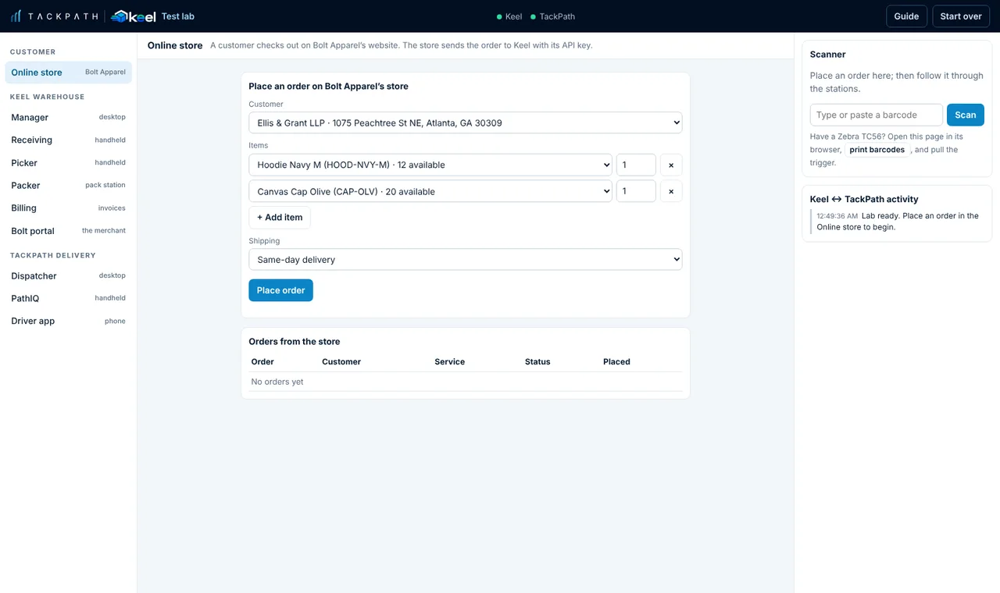
2. Set up the Zebra TC56
The TC56's trigger types the barcode into the screen, then presses Enter. The lab listens for that, so you can scan from anywhere on a station.
Print the barcodes. On a computer, open the lab, tap Scanner, then print barcodes. You get every shelf, item, dock, tote and PathIQ bin label on a few pages.
Two kinds of barcode only exist once you've made them: the order number and the package label. At those steps, tap the code on screen instead, or print the sheet again after packing.
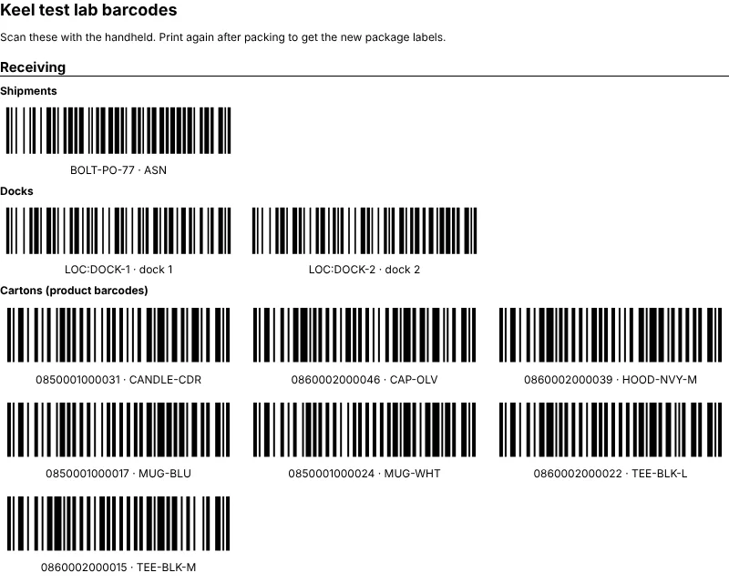
Make the trigger press Enter. On the TC56 open DataWedge, then Profile0, then Keystroke output, then Basic data formatting, and turn on Send ENTER key.
How to check it: scan any barcode into a box in the lab. If the code appears but nothing happens, Send ENTER is off.
Open the lab on the TC56. In Chrome go to tackpath.com/keeltest. Give it a minute to start: it's running the whole warehouse on the handheld.
Swipe the station bar to Receiving, Picker or PathIQ. Those are the handheld jobs. The menu shows the jobs this person is allowed to do.
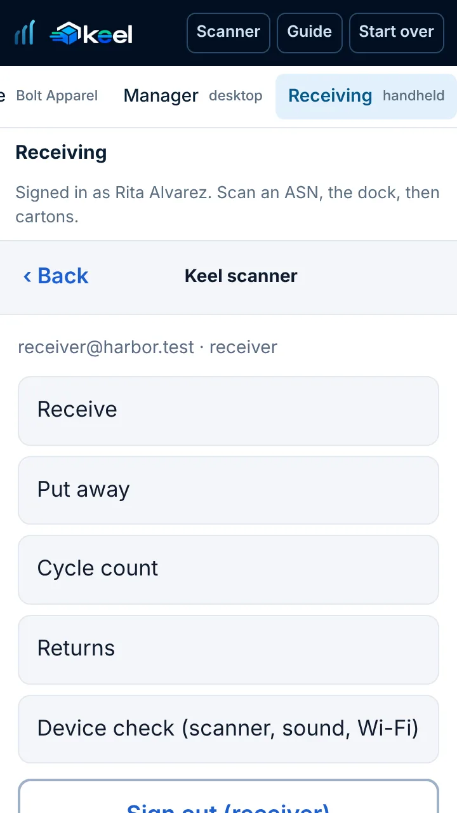
3. One order, start to finish
A same-day order for Ellis & Grant LLP: a navy hoodie and an olive cap. Follow the stations in this order.
Online store: place the order
Pick a customer, pick items, leave shipping on Same-day delivery, then Place order.
You're the customer here. Nothing to scan.
Manager: watch it arrive
Open Manager. The order lands on the Dashboard under Same-day delivery. Keel checks stock and sends it to the floor by itself. You don't press anything.
The Outlook column says if it'll make its promise: on track, tight, at risk or late.
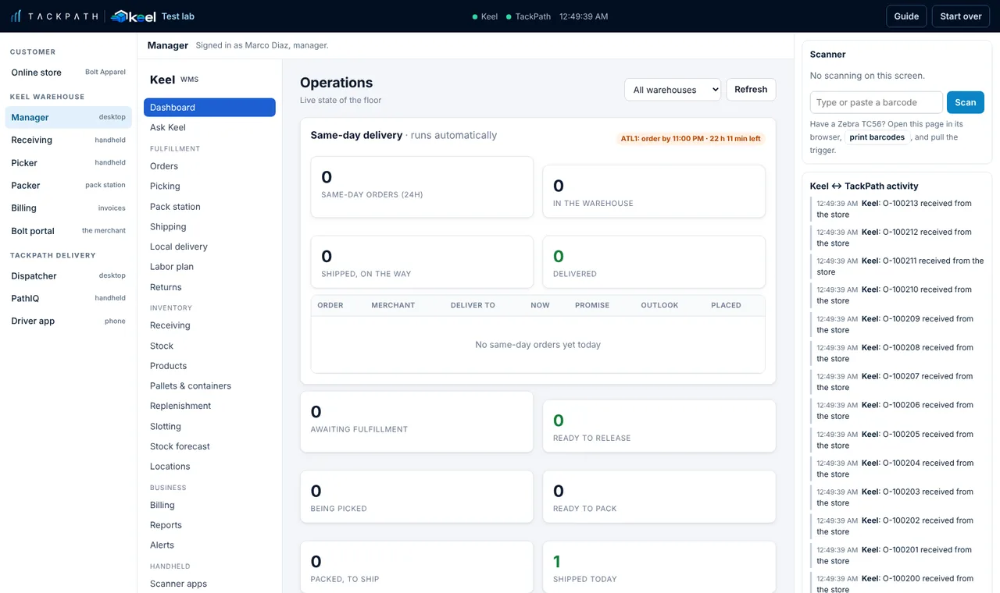
Picker: choose the batch
Open Picker. Keel has grouped the work into a batch. Same-day ones are marked in orange with their deadline.
B-1001
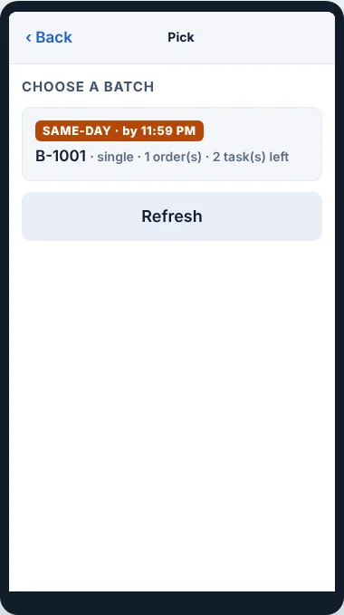
Picker: bin, then item
The big text is where to walk. Keel sorts the stops so you never double back.
- Walk to the bin and A-01-04 its shelf label.
- Take the item and 0860002000039 its barcode (the hoodie).
- The next bin comes up by itself. Same again for the cap.
The wrong bin or the wrong item gets refused, the same as on the floor. Short pick is for when the shelf is empty.
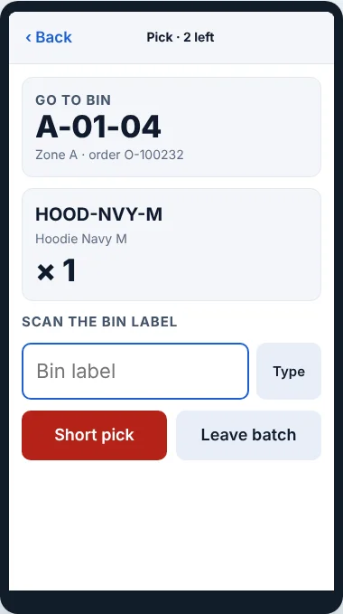
Picker: done
"Batch complete. Take the totes to packing." The order moves to the pack station.
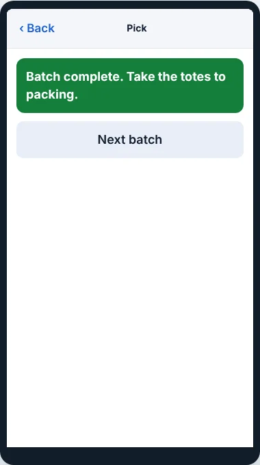
Packer: open the order, scan items in
- Open Packer. Under Orders ready to pack, O-1002xx or scan the packing slip.
- each item into the box. The Left column counts down to 0.
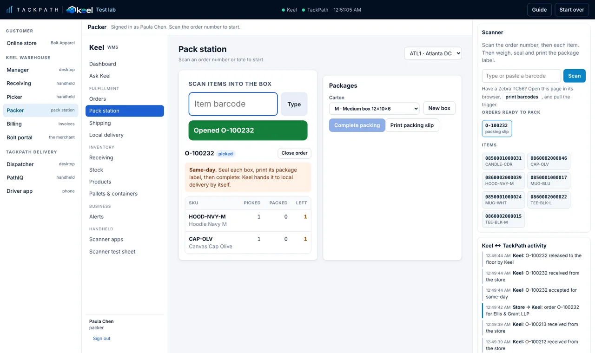
Packer: weigh, label, finish
- Pick the box size, type the weight, Weigh & seal.
- Print package labels. Stick it on the box.
- Complete packing.
Keel now hands the delivery to TackPath on its own: it writes the SmartSort file the dispatcher uploads next.
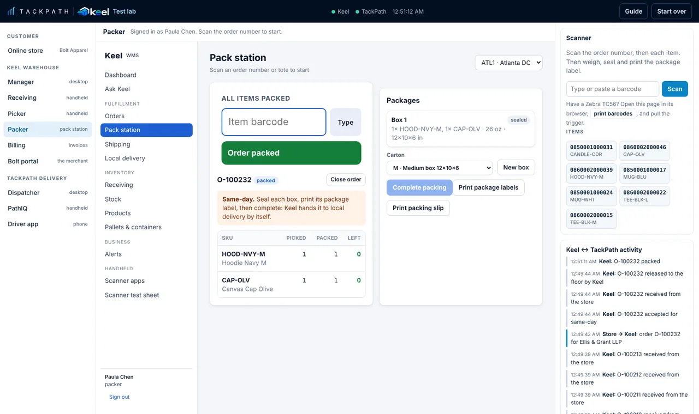
Dispatcher: upload and assign
- Open Dispatcher. Keel's file is waiting at the top. Upload to SmartSort.
- A route appears. Tap its row, choose Andre Coleman as the driver, Assign.
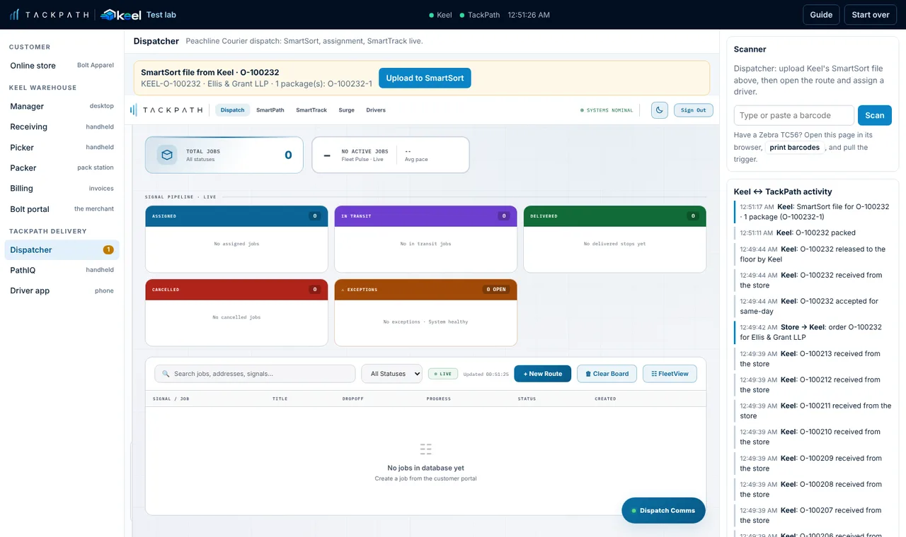
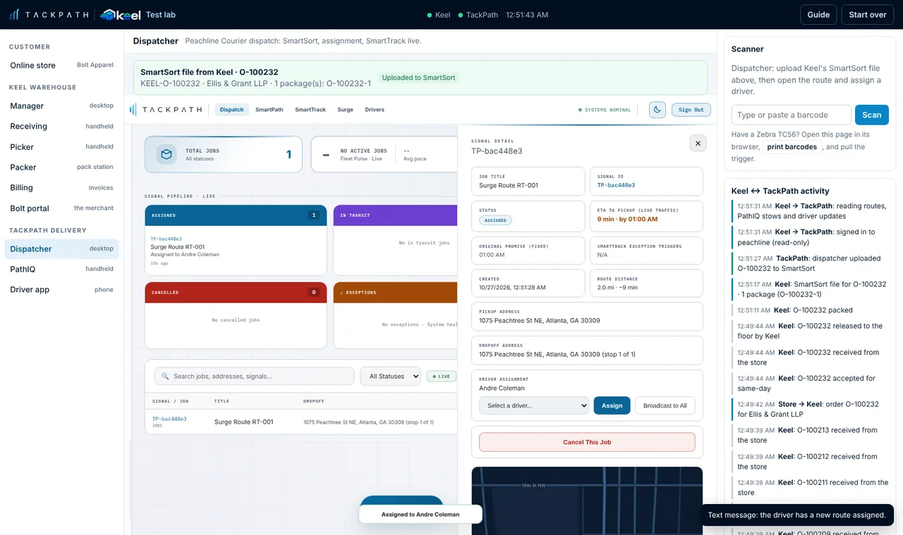
PathIQ: sort the package into a bin
Open PathIQ, then Stow. The strip across the top (Package, Bin, Location, Stage) shows which scan it wants next.
- the package label
- The first package of a route needs a bin: BIN:1A then LOC:A-01
- the package label again, then BIN:1A to stow it.
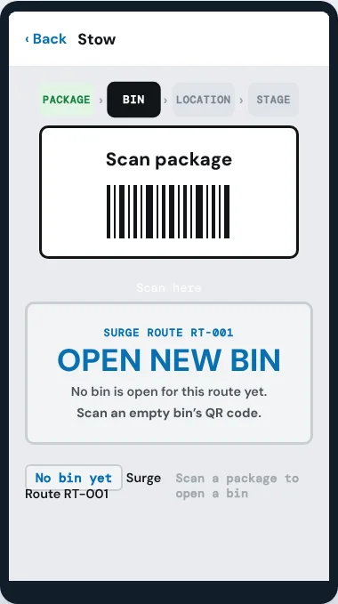
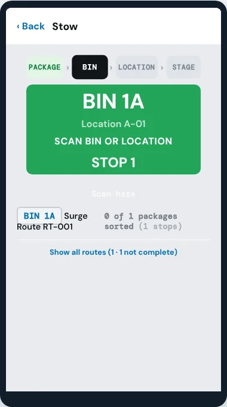
PathIQ: stage it for pickup
When every package on the route is in its bin, the screen turns orange: STAGE. Carry the bin to a staging spot and STG:S-01.
Green "Staged at S-01" means the driver can come get it. Keel marks the order staged by itself.
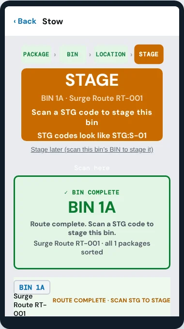
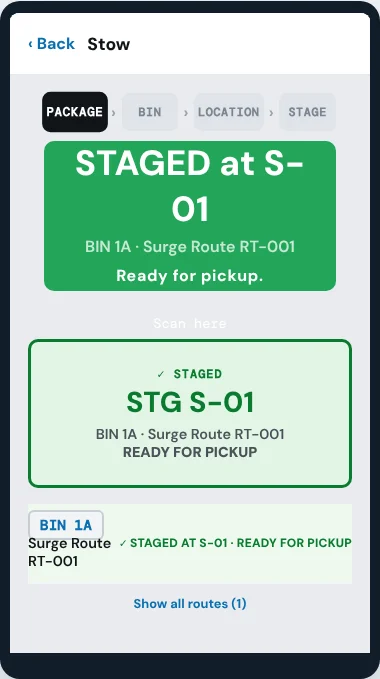
Driver: sign in, go to pickup
- Open Driver app. Phone number (404) 555-0161, Send Code. The code arrives as a text message on screen. Type it in.
- Today's route says Ready for pickup, at STG S-01, bin 1A. AT PICKUP
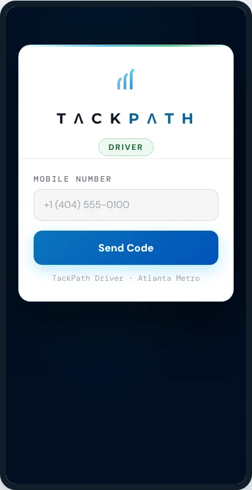
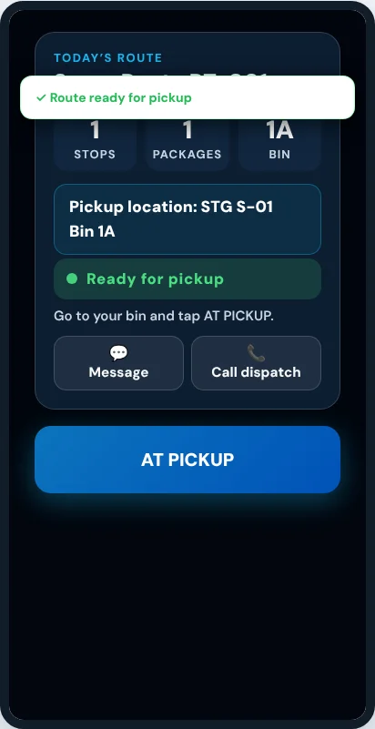
Driver: check the bin, load, go
- The phone camera opens. BIN:1A to prove it's the right bin.
- Load tab, then the package label.
- START ROUTE
The driver app uses the phone's camera, not the trigger. In the lab, tap the code in the Scanner panel to hold it up to the camera.
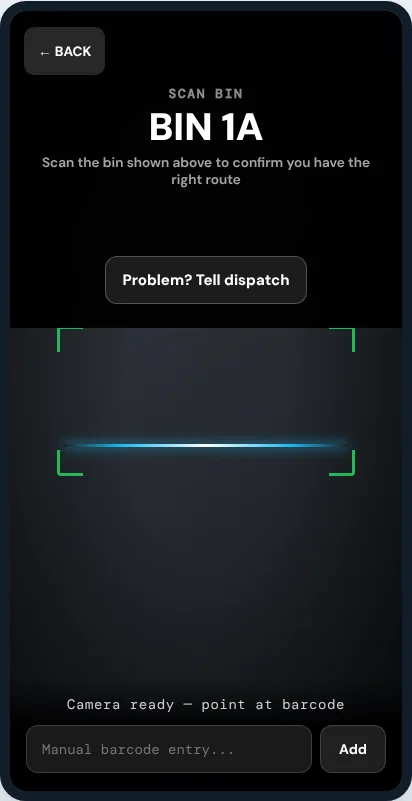
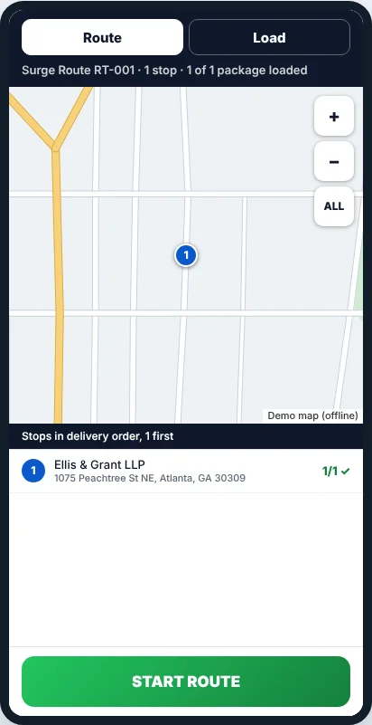
Driver: deliver with proof
- Tap the stop, Drive there, then Arrived and Mark Arrived.
- the package label (tap Deliver first if the camera isn't open), then Proof of delivery and pick Front door.
- Take the photo (in the lab: Front door in the Scanner panel, then the capture button), then Confirm Final Delivery.
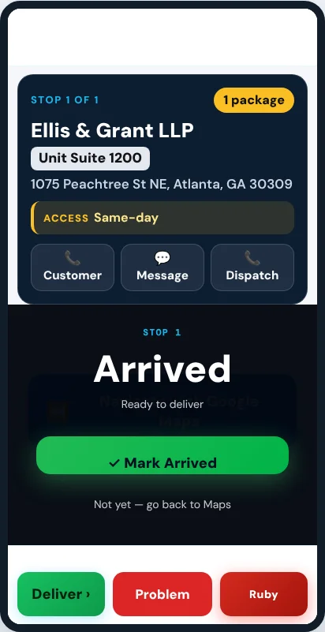
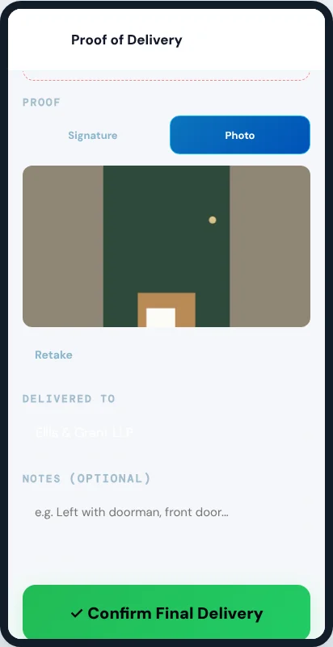
Keel closes it out by itself
Within a few seconds Keel reads the delivery from TackPath and marks the order delivered, with the photo. Nobody presses anything. Check it in Manager or the Bolt portal, where the merchant sees it too.
The log on the right shows each hand-off: staged, handed off, out for delivery, delivered.
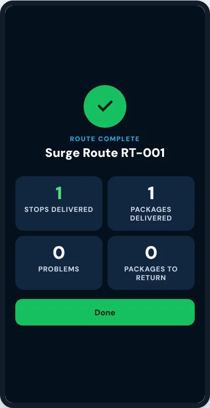
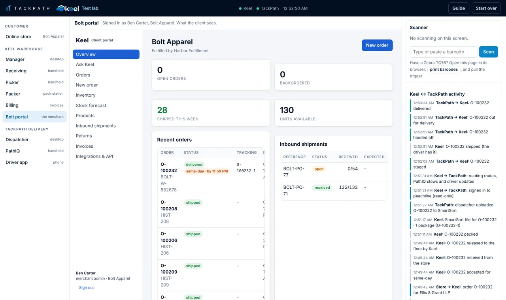
4. Receiving a shipment
Bolt Apparel has a truck coming: BOLT-PO-77, 54 units.
- Open Receiving, then Receive.
- BOLT-PO-77 (the paperwork), then LOC:DOCK-2 (where you're unloading).
- each carton's barcode. Each scan counts one. Use + to count more per scan, for a case of 12.
- Back, then Put away. Scan an item and Keel tells you which shelf it fits on, by size and weight. Scan that shelf to confirm. If one shelf can't hold it all, Keel splits it across two.
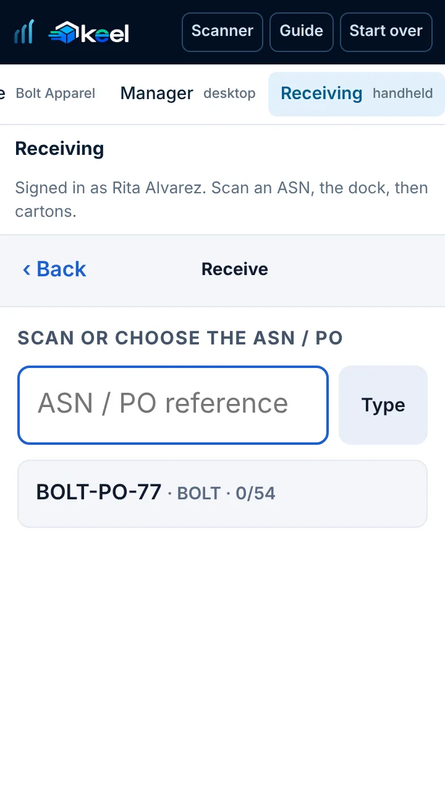
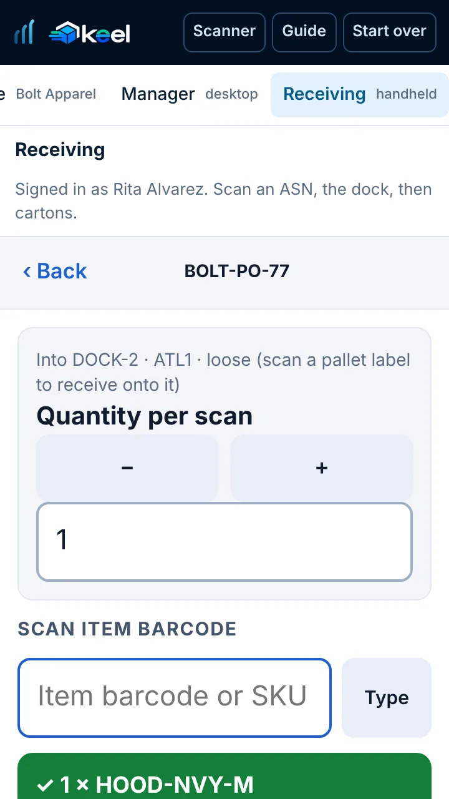
5. When something goes wrong
- "This screen has no scan field open." You scanned on a menu. Tap into the job first (Receive, Pick, Stow).
- The code shows up in the box but nothing happens. Turn on Send ENTER in DataWedge (part 2, step 2), or tap Type next to the box.
- A red refusal. Keel is protecting you: wrong bin, wrong item, or a shelf that's full. Read the message. It says what it expected.
- Lost track of where you are. ‹ Back at the top left goes up one screen. Start over resets the whole lab.
- The lab is slow on the TC56. It's running the whole warehouse on the handheld. Close other apps, or run the lab on a computer and use the TC56 for the handheld stations.